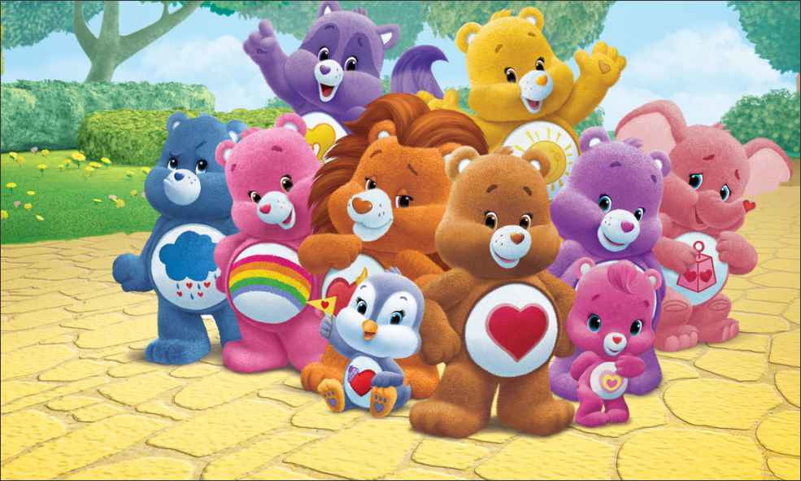

OS URSINHOS CARINHOSOS
SOBRE ELES
Os Ursinhos Carinhosos são um grupo de adoráveis ursinhos com importantes ensinamentos para a humanidade, como: sabedoria, amizade, felicidade e alegria. Cada um possui sua própria característica principal estampada em seu corpo, como o Animadinho, o Camarada e o Coração Veloz. Eles ajudam as crianças quando são alertados pelo Carinhômetro!
Eles já tiveram a prórpia série de televisão e três filmes longa-metragem, todos baseados na série.
HABITAT
Eles habitam a Nuvem Rosa, repleta de nuvens e arco-íris! Além da sua casa, também possuem o Templo dos Corações, um salão em formato de Coração Vermelho, e a Casa da Vovó.
AMIGOS
Seus amigos, além das crianças, são seu primos, que moram na Floresta dos Sentimentos, e que possuem símbolos que resumem seus poderes na barriga, assim como os Ursinhos.